36
CAPÍTULO 1 - Construções geométricas
No interior do Brasil, na entrada de grandes fazendas, é comum encontrarmos portões construídos de ripas de madeira como o representado na foto a seguir.

- Troque ideias com um colega e escrevam, no caderno, após observarem a foto, qual
a posição relativa das ripas que:
- foram usadas na posição horizontal;
- foram usadas na diagonal em relação às ripas que estão na horizontal;
- foram usadas na vertical em relação às ripas que estão na horizontal.
Retas paralelas
Você observou que o portão de madeira foi construído com ripas que lembram retas. Agora, vamos construir uma reta paralela a outra reta, passando por um ponto dado.
37
- Sobre uma reta t, marque o ponto O. 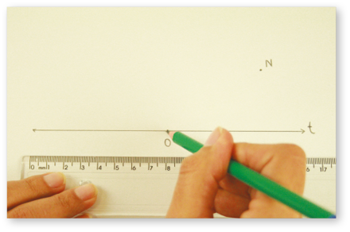
- Com a ponta-seca do compasso no ponto O, trace um arco que passe pelo ponto N e intersecte a reta t em dois pontos, determinando, assim, os pontos A e B. 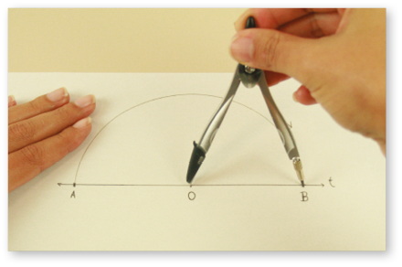
- Com a ponta-seca do compasso em A e a abertura do compasso igual à medida BN, trace outro arco para determinar o ponto M. 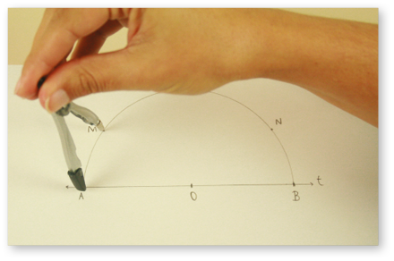
- Trace a reta u, que passa por M e N. 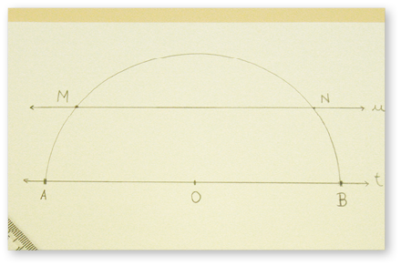
38
Retas perpendiculares
A seguir, veremos como construir uma reta perpendicular a outra reta, passando por um ponto dado.
Com a ponta-seca do compasso em M, trace um arco que intersecte a reta t em dois pontos, determinando, assim, os pontos A e B.
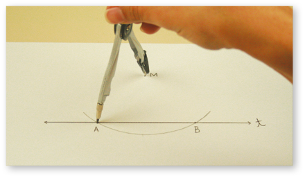
Com a ponta-seca do compasso em A e a medida do raio maior que a metade da med ( ), trace um arco.
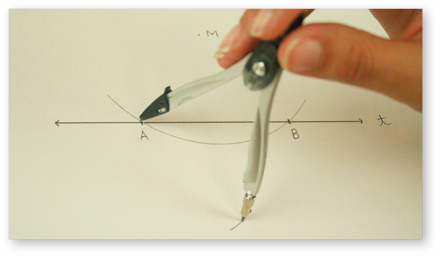
Com a mesma medida do raio e a ponta-seca do compasso em B, trace um arco que intersecte o anterior, determinando, assim, o ponto N.
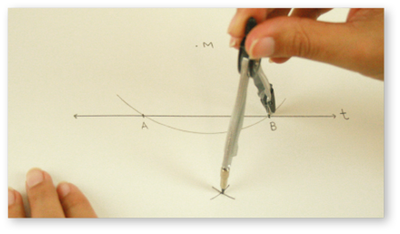
Trace a reta u, que passa por M e N.
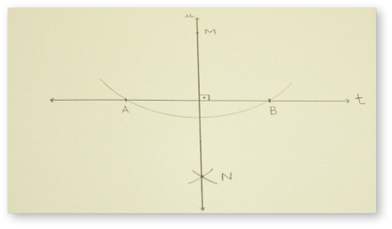
39
Ponto médio e mediatriz de um segmento
Vamos traçar uma reta perpendicular à , passando pelo seu ponto médio.
- Com a ponta-seca do compasso no ponto A e a medida do raio maior que a metade da med ( ), trace um arco, conforme a imagem.
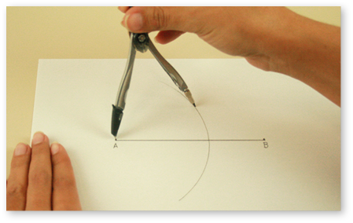
- Com a ponta-seca do compasso no ponto B e a mesma medida do raio, trace um arco que intersecte o anterior, determinando, assim, os pontos M e N.
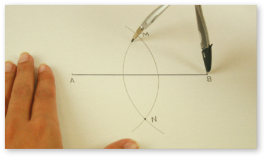
- Para determinar o ponto P, trace a reta que passa por M e N.
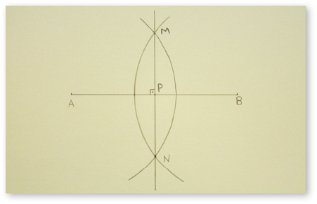
O ponto P denomina-se ponto médio e divide em dois segmentos congruentes.
A reta perpendicular à e que passa por M e N é chamada de mediatriz de .
A mediatriz de um segmento é o conjunto de pontos que equidistam dos extremos do segmento.
40
Encontre soluções
- Desenhe uma reta r e marque um ponto P a uma distância qualquer. Em seguida, trace uma reta s paralela à reta r, passando pelo ponto P.
- Construa um pentágono, como o indicado a seguir, e trace uma reta perpendicular ao lado , passando pelo vértice A. 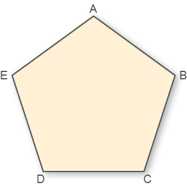
- Desenhe, no caderno, os segmentos a seguir e encontre o ponto médio de cada um deles. 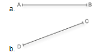
- Desenhe um triângulo qualquer e trace a mediatriz de cada um dos
lados desse triângulo.
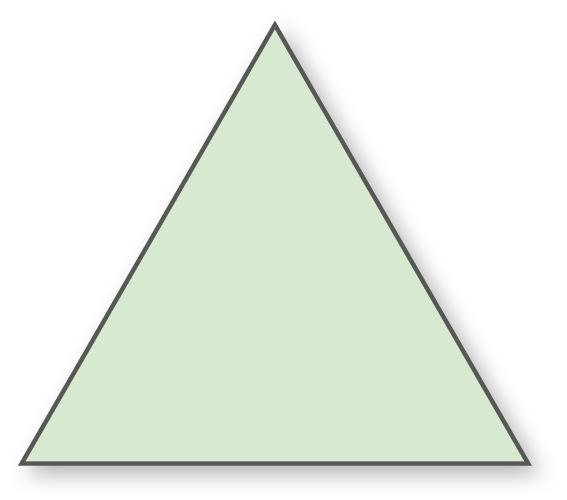
- O que você observou ao traçar as mediatrizes?
- Abaixo, temos representado uma reta t e os pontos M e N. Trace duas retas perpendiculares à reta t, uma passando pelo ponto M e outra passando pelo ponto N. 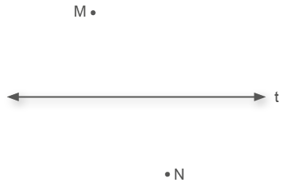
- Em seu caderno, desenhe um triângulo retângulo e um obtusângulo conforme os modelos a seguir e trace as alturas desses triângulos. O que você pode observar em relação ao ponto de encontro das alturas nos dois triângulos? 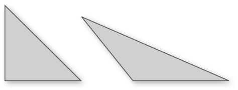
- Observe o desenho a seguir:
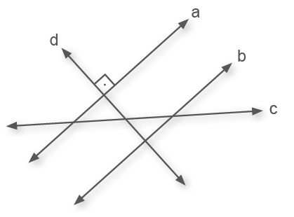
Identifique retas que sejam:
- perpendiculares entre si;
- paralelas;
- transversais.